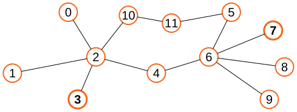

[3] Direccionamiento¶
Conectar dos ordenadores los hace mucho más útiles que dos máquinas aisladas. Sin embargo, su verdadero potencial solo se libera cuando pueden conectarse a muchos otros ordenadores.
Las limitaciones prácticas, como el coste y la ubicación geográfica, hacen imposible conectar directamente cada par de ordenadores. En su lugar, los dispositivos se distribuyen en un grafo de redes interconectadas, que puede extenderse incluso más allá de la escala de un planeta.
Ya sea localmente, al alcance físico, o en otro continente, se necesita un sistema de direccionamiento para identificar, localizar y encaminar los mensajes de modo que lleguen a los peers (pares) a los que van dirigidos, igual que hacemos con las ubicaciones físicas.
[3.1] Por favor, contacta conmigo¶
Cuando solo intervienen \(2\) dispositivos, se puede usar una conexión punto a punto. En este tipo de conexión solo existen “este lado” y “el otro lado” del cable. Además, cuando un dispositivo quiere comunicarse con el otro extremo, solo hay un enlace (p. ej. un cable) entre el que elegir, así que no hay confusión posible. Como podemos operar esta conexión con solo \(2\) tarjetas de red (también: controlador de red, NIC) y \(1\) cable, las conexiones punto a punto son viables para \(N=2\) dispositivos.

Si queremos conectar \(N > 2\) dispositivos, una opción ingenua es conectar cada dispositivo con todos los demás formando un grafo completo. Ahora cada dispositivo necesita manejar \(N - 1\) cables hacia los otros dispositivos, pero comunicarse con cualquier otro dispositivo es tan sencillo como elegir el cable correcto y establecer una conexión punto a punto.
El principal problema de este enfoque es que el número total de conexiones es \(N \cdot (N-1) / 2 = O(N^2)\) (más sobre esto en tu fiel asignatura de Matemática Discreta). Esto significa que, para tener \(N=10\) dispositivos conectados de esta manera, necesitarías por ejemplo \(40\) cables y \(90\) tarjetas de red. Para \(N=1000\) dispositivos, habría medio millón de conexiones punto a punto, lo cual ya resulta bastante inmanejable.
Nota
\(O(N^2)\) es la notación de una cota de complejidad cuadrática. Esto no es lo mismo que exponencial y nunca debe confundirse. (leer más...)

Nos queda un truco en la manga: los buses de datos, donde una o más líneas de datos están conectadas simultáneamente a múltiples dispositivos. Esto conserva la simplicidad de las conexiones punto a punto, porque cada dispositivo solo tiene que manejar \(1\) cable y puede usarlo para comunicarse con todos los demás dispositivos. También se conserva la rentabilidad, ya que solo hacen falta \(N\) tarjetas de red para \(N\) dispositivos (\(O(N)\)).
La principal ventaja de los buses de datos es también su principal debilidad: todos los dispositivos envían y reciben datos usando la misma línea de datos, pero no pueden hacerlo al mismo tiempo porque solo hay una línea. Si dos o más lo hacen, se produce una colisión que hace imposible la transmisión de datos mientras dura.
Nota
A medida que se desarrollaban las redes de ordenadores, se experimentó con muchas alternativas a la topología de bus. Un ejemplo curioso es Token Ring, donde los dispositivos se conectan formando un círculo y los mensajes se van pasando en un único sentido.
En la práctica, no es trivial implementar una tecnología de bus en la que se puedan ir añadiendo nuevos dispositivos con el tiempo. Históricamente, esto se hacía a veces perforando físicamente el cable principal del bus y añadiendo un cable nuevo hacia el nuevo ordenador que se conectaba. Más adelante, esto se simplificó con unos dispositivos llamados hubs (concentradores). Funcionaban de forma similar, pero ofrecían puertos físicos prefabricados y conectores extraíbles. Hoy en día, los hubs han sido sustituidos por los switches (conmutadores). Los switches ofrecen la funcionalidad de un bus, conectando todos los dispositivos entre sí, y además evitan las colisiones. Por razones obvias, estructurar las conexiones en torno a un switch se denomina topología en estrella.
Ejercicio 3.1
¿Qué hace falta en un switch que no hace falta en un hub?
Las topologías de bus funcionan muy bien a escala local y se emplean ampliamente en las LANs (redes de área local). Sin embargo, no resultan rentables (a veces ni siquiera son físicamente posibles) cuando los dispositivos están muy separados. En su lugar, los dispositivos pueden organizarse en LANs separadas, cada una conceptualmente un bus, y luego esas LANs separadas pueden conectarse mediante conexiones punto a punto más baratas y factibles. Considerados en conjunto, esos dispositivos formarían entonces una WAN (red de área extensa).

[3.2] Necesito encontrarte¶
Una vez más, la principal ventaja de los buses de datos es también su principal debilidad: todos los dispositivos envían y reciben datos usando la misma línea de datos. Aunque no se produzcan colisiones, todos los dispositivos reciben cada mensaje enviado al bus. Sin embargo, lo que realmente queremos es que nuestro mensaje llegue a su destino, y solo a su destino. Llamemos a esto el problema de encontrar-mi-dispositivo.
El problema de encontrar-mi-dispositivo no es exclusivo de los buses ni de las LANs. Al contrario, se vuelve muy importante cuando consideramos las WANs, donde no todos los dispositivos están directamente interconectados. En este caso, tenemos que asegurarnos de poder encaminar nuestros mensajes entre distintas LANs y de que lleguen a su destino.
Sorprendentemente, ni siquiera las conexiones punto a punto se libran del problema de encontrar-mi-dispositivo. Suponiendo que los dispositivos A y B están conectados de ese modo, dos programas distintos pueden querer intercambiar información al mismo tiempo, p. ej. un software de control de alarmas y una aplicación de streaming de música. En este escenario, quieres que el cliente y el servidor del servicio de monitorización de alarmas se comuniquen entre sí, pero no con el servicio de streaming de música, y viceversa.
La solución más común a este problema es usar identificadores que nos permitan distinguir entre dispositivos o incluso entre procesos en ejecución dentro de un sistema operativo (SO). Algunos de estos identificadores se denominan direcciones, precisamente porque se usan para encontrar y alcanzar un dispositivo remoto.
Las direcciones son normalmente identificadores numéricos, es decir, simplemente un número. Como tales, pueden expresarse en distintas bases, incluidas la decimal y la hexadecimal. Estos números se toman de un conjunto predefinido, y la elección de ese conjunto determina el número máximo de elementos que podemos identificar de forma unívoca.
Nota
Las direcciones expresadas como d8:43:ae:61:ed:f1 o 192.168.1.1 (como se verá más adelante en el curso) son también números que podríamos haber expresado como 237785200061937 y 3232235777, respectivamente (lo cual no resulta tan cómodo).
Ejercicio 3.2
¿Cuántos elementos se pueden identificar de forma unívoca (como máximo) con una dirección que expresamos usando 5 bits? ¿Y con 10? ¿Y con 20? Expresa la solución general matemáticamente.
Ejercicio 3.3
Supón que hay \(1000\) máquinas en una LAN. ¿Cuántos bits de dirección hacen falta? ¿Y con \(800\) máquinas? ¿Y con \(1100\)? Expresa la solución general matemáticamente.
Nota
En 2019 nos quedamos sin direcciones de Internet (v4). ¡Uy!
[3.3] ¿Cómo llego hasta ahí?¶
En muchos escenarios se necesitan varias direcciones para llevar a cabo la comunicación extremo a extremo deseada. Por ejemplo, puede que necesitemos identificar un único dispositivo dentro de una LAN, y esa LAN dentro de una WAN. A veces necesitaremos identificar un proceso (un programa en ejecución) dentro de ese dispositivo. Esto no es muy distinto de que alguien te visite en persona:

Sea cual sea el sistema de direccionamiento que usemos, debe contener información suficiente para localizar y alcanzar el destino, es decir, para encaminar nuestros mensajes a través del grafo de conexiones. El proceso de encaminamiento implica múltiples pasos o “saltos” entre redes hasta alcanzar la LAN de destino.
El nombre router (encaminador) designa un tipo de dispositivo de red cuya tarea es reenviar estos mensajes entre redes. Estos dispositivos deben contener información suficiente para que, cuando se les entrega un mensaje con una dirección de destino, puedan decidir qué interfaz de red usar. A su vez, los dispositivos que no son routers solo necesitan configurarse para poder alcanzar el siguiente router.
Nota
En casa, tu router normalmente desempeña también el papel de switch, pero son conceptos diferentes.
Ejercicio 3.4
Esta figura representa un puñado de dispositivos y sus conexiones físicas. Estos dispositivos solo pueden comunicarse enviando mensajes a través de esas conexiones. Aun así, 3 quiere enviar un mensaje a 7.

-
¿Puedes identificar algún dispositivo que probablemente esté actuando como switch? ¿Y como router?
-
¿Cuál es el número mínimo de mensajes enviados para que 3 pueda contactar con 7, y 7 pueda responder a 3? Enuméralos en el orden en que se producen.
-
¿Qué información hay que incluir en esos mensajes para que pueda tener lugar la comunicación 3 \(\leftrightarrow\) 7?
Los diagramas de carriles como el de abajo se usan para representar las interacciones (p. ej. el intercambio de mensajes) entre actores (p. ej. dispositivos de red). En ellos, el eje vertical representa el tiempo, lo que resulta valiosísimo para identificar relaciones causa-efecto.

Ejercicio 3.5
A partir de tu respuesta al Ej.3.4, elabora un diagrama de carriles que represente los intercambios de mensajes. Para cada mensaje (p. ej. encima de las flechas), incluye la información de direccionamiento presente en él.